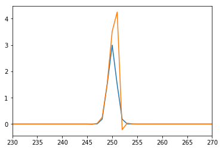
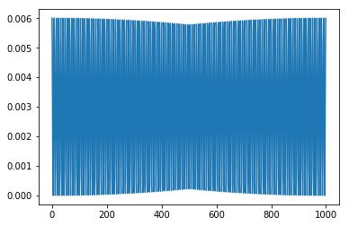
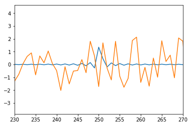

In [8]:
%matplotlib inline
import numpy as np
import pylab as pl
import orb.utils.spectrum
import orb.utils.sim
In [30]:
# dispersive spectrum model
N = 1000
x = np.arange(N, dtype=float)
h = 0
a = 3
dx = N/4.
fwhm = 2
spectrum = orb.utils.spectrum.gaussian1d(x, h, a, dx, fwhm)
pl.plot(spectrum)
noise = np.random.standard_normal(N) * np.sqrt(spectrum)
pl.plot(spectrum + noise)
pl.xlim((230,270))
Out[30]:
(230, 270)

In [33]:
# interferometric spectrum model
interf = orb.utils.sim.line_interf(dx/2, N, 0) * a / N * 2
noise = np.random.standard_normal(N) * np.sqrt(interf)
pl.plot(interf)
pl.figure()
axis, interf_spectrum = orb.utils.sim.fft(interf, zp_coeff=1)
pl.plot(interf_spectrum)
axis, interf_spectrum_noise = orb.utils.sim.fft(interf + noise, zp_coeff=1)
pl.plot(interf_spectrum_noise)
pl.xlim((230,270))
Out[33]:
(230, 270)

